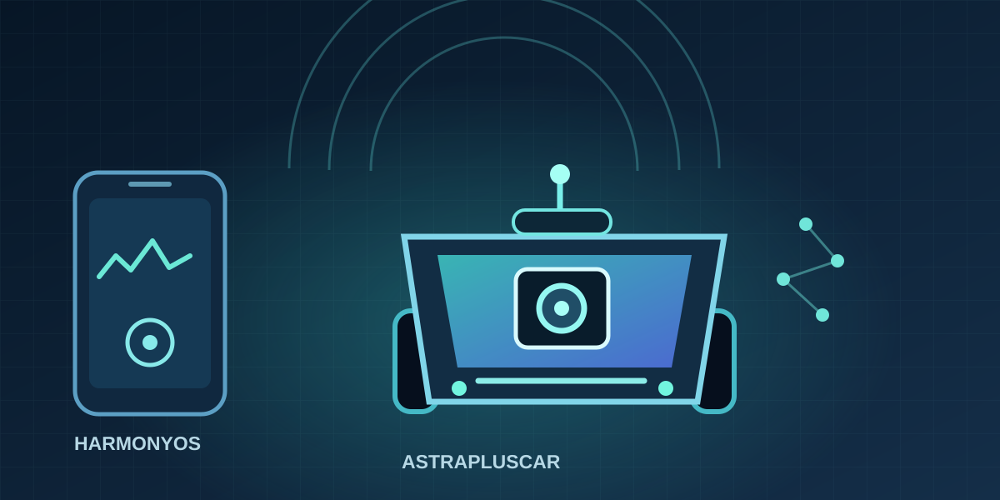

Robotics · Embedded Systems · HarmonyOS
AstraPlusCar
A smart vehicle built across sensors, device software, and a phone interface. The device gathers camera and lidar data and controls the chassis through an ESP32; a HarmonyOS app previews the camera and sends driving commands over the local network.
At a glance
AstraPlusCar is a smart vehicle system controlled from a HarmonyOS phone. The device side runs on an Ascend developer kit with a camera and lidar attached, driving a Mecanum-wheel chassis through an ESP32; the phone provides video preview, lidar status and driving controls. Built on Huawei’s official E2E sample, the project makes two additions: swapping the camera for a 3D structured-light camera, and completing a usable phone control client.
- Three-tier divisionThe phone handles interface and control, the Ascend device handles perception and decisions, the ESP32 handles low-level actuation.
- Three autonomous modesSign-assisted driving, lane following and target tracking, each backed by a different model and behaviour policy.
- Fail-safeRelease-to-stop plus a link watchdog; the vehicle does not continue its last action after a dropout.
About this project
What it addresses
The project concerns controllability when the phone, the Ascend device and the chassis work together, and completes two engineering changes on top of the official sample: connecting a 3D structured-light camera, and building a phone control client for the vehicle.
How the system cooperates
The phone sends high-level driving intent. The device receives it, combines it with camera, lidar and chassis state, and passes the resulting action to the ESP32. Sensor data returns the other way, which keeps the video and lidar readout current.
What it uses
The device side is Python running on an Ascend developer kit, with inference on Ascend offline models. The phone side is a HarmonyOS application written in ArkTS. The chassis is an ESP32. The two connect over local HTTP and a serial link.
Current status
The phone client has been installed on a real device and tested against the physical car over the same network; video preview, three-direction lidar, screenshots and the private gallery are confirmed, as are the API-side status query, direction commands, renewal and automatic stop on link loss. On-vehicle driving behaviour still requires on-site observation.

Overview
The project has two independent repositories. The device side runs on the Orange Pi AI Pro / Ascend environment and handles sensors, vehicle control, and the HTTP API. The phone side uses ArkTS for the driving interface. Earlier device code also contains lane following and object tracking experiments.
Device and chassis
The device manages the camera, lidar, and control loop. It sends high level actions over serial to the ESP32, which handles motors, servos, and other hardware.
Phone controller
The HarmonyOS app offers camera preview, lidar status, direction controls, speed adjustment, stopping, and photo capture.
Three autonomous modes
The device ships with three behaviour modes, all switchable by external command; a manual mode is also provided for direct control.
Sign-assisted driving
Loads an offline YOLOv5 model to recognise left-turn, right-turn and U-turn signs, triggering the corresponding in-place turn based on the detection centre and area thresholds.
Lane following
A regression network outputs a single steering value for each frame, which is mapped in segments to forward, turn-left or turn-right so the vehicle follows the lane marking.
Target tracking
Speed is adjusted by the size of the target box, steering follows the direction the target deviates from the frame centre, and the vehicle stops once it closes to a threshold distance.
Manual mode
Keyboard control of forward, back, left, right, in-place rotation and sideways movement, with speed adjustment, stopping and frame capture available at any time.
Control path
Phone and vehicle share a WLAN. The phone sends high level commands; the device confirms and executes them, then drives the ESP32 over serial. Camera and lidar data flow back to the interface.
HarmonyOS app
→Local HTTP API
→Ascend device
→Serial · ESP32 · Chassis
The device-side project
The device side is built on Huawei’s official E2E sample, with an unmodified copy kept alongside for comparison.
Original and modified
The original project is byte-identical to the official sample. The modified version adds a 3D structured-light camera and raises the capture resolution from 1280×720 to 1920×1080; the change touches only seven files, leaving the rest unchanged.
On-board inference
Recognition runs on the board using Ascend offline models, covering sign detection, lane-following regression and target tracking, with both pre- and post-processing included in the project.
Lidar and mapping
Includes an RPLIDAR test project built on ROS2, used to collect point clouds and verify the mapping pipeline.
Supporting tools
Ships with training and export code for the lane-following model, a lane-marking auto-labelling tool, and a separate ESP32-based vehicle firmware with a Chinese tutorial.
The phone control client
The HarmonyOS application offers two layouts: portrait shows connection status, video, the lidar bar and the control pad in sequence; landscape lets the video fill the screen with joysticks and lidar bands overlaid.
Video and lidar
Video arrives as a single continuous stream, with a separate lidar bar beneath it showing left, front and right distances graded by warning level. With no echo the app shows “not measured” rather than treating it as a safe distance.
Driving controls
The four main directions are forward, turn left, back and turn right; the corners handle rotation and sideways movement. Only one action is active at a time while held, and sliding to a new direction stops first. The speed slider stays usable during movement.
Fail-safe
If video reception or decoding times out, the client drops control and stops the vehicle, then reconnects with backoff. Movement and speed changes are blocked until a fresh live frame arrives, and an old session cannot restore previous keys or actions.
Screenshots and gallery
Screenshots are stored on the vehicle first, then downloaded into the app’s private gallery where they survive restarts. Images only reach the system album after the user explicitly downloads them and grants permission.
Current status
Both sides have implementations and usage documentation. App builds and offline checks do not establish real vehicle behavior. Wheel direction, camera and lidar integration, WLAN access, and stop on control loss still require physical testing.
Stack: Python · ArkTS · HarmonyOS · Orange Pi AI Pro / Ascend · ESP32 · HTTP API · Serial · Camera · Lidar